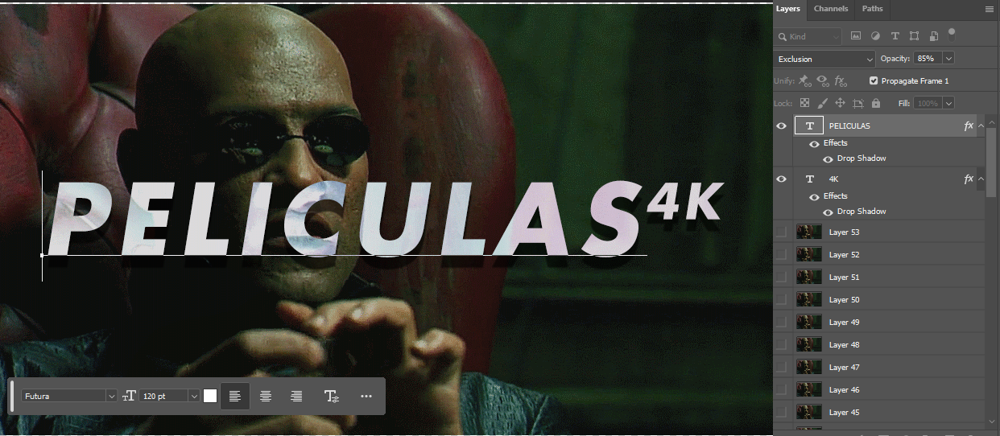

Jellyfin
Libreria de Medios Personalizada
11-03-2024
Jellyfin utiliza imágenes con Relación de Aspecto de 16:9 para crear las tarjetas de imagen de la Librería de Medios que vemos al abrir la aplicación.
Estas imágenes son creadas automáticamente, Jellyfin elige una imagen al azar en la librería y agrega el titulo de esta encima.
| ejemplo tarjetas de imagen de la Libreria de Medios creadas por Jellyfin |
|---|
Personalizar estas imagenes es simple:
- Sabemos que Jellyfin utiliza imagenes con un AR[1] de 16:9
- Podemos utilizar imagenes estaticas o animadas.
En este cazo utilizare Cinemagraphs[2] de peliculas y series de TV.
Un buen sitio para buscar cinemagraphs es reddit, podemos partir buscando en r/Cinemagraphs y en r/perfectloops.
Para este ejemplo elegí este cinemagraph de Morpheus.
 Este gif es pesa 2.38MB y mide 1286x536 pixeles. Este gif es pesa 2.38MB y mide 1286x536 pixeles.(creado por /u/orbojunglist) |
|---|
El tamaño de la imagen es mas grande de lo que necesitamos, además su AR no es de 16:9, todo esto lo corregiremos en el editor de imágenes. (e.g. Photoshop, GIMP, etc.)
Primero que nada debemos ajustar tanto el tamaño y AR del cinemagraph. Para esto debemos elegir un tamaño que se vea bien en una TV en 4K y sea 16:9. Este numero magico es 960x540 pixeles.
Para cambiar la Relacion de Aspecto:
- En photoshop vamos a Image -> Canvas Size -> en Width cambiar el tamaño actual, en este caso de 1286 a 960. en Height el tamaño actual es 536, inferior a los 540 que necesitamos, pero como son solo 4 pixeles no importa mucho asi que vamos a cambiar el Height a 540.
- Ahora que la imagen esta en 16:9 solo queda un problema, esos 4 pixeles transparentes arriba y abajo de la imagen. En este caso hay 3 posibles soluciones:
- Dejar la imagen así. con 4 pixeles transparentes.
- Agregar un fondo negro: creamos un Layer, lo movemos abajo de la lista de Layers y lo pintamos negro.
- Agrandar la imagen: antes de cambiar el AR a 16:9 agrandamos la imagen en 4 pixeles de Alto, quedando en 1296x540 y luego cambiar el AR a 960x540.
En nuestro caso elegiremos la opción 1, dejar la imagen así, ya que 4 pixeles no se notan. :)
Podemos terminar y subir el Cinemagraph (en formato .GIF) y dejar que Jellyfin se encargue del titulo, o podemos agregar el titulo nosotros y optimizar el peso de la imagen ocupando un formato mas moderno.
La elección de la fuente es a gusto, en mis imágenes uso Futura con el estilo Bold Oblique. El texto principal tendrá un tamaño de 120pt y el sub-texto un tamaño de 60pt.
Los Layers de texto deben estar por encima de todos los demás Layers para que esten visible en todos los frames de animación.
| El texto debe ir encima del resto de los Layers |
|---|
La opacidad del texto es de 75% y el blend mode del Layer debe cambiarse a Exclusion para que se vea el fondo de la imagen con colores invertidos. La sombra del texto e un Drop Shadow, blend mode Multiply, opacidad 75%, angulo de sombra 90°, distancia 15px, tamaño 2px.
Ahora guardamos el archivo en formato y lo subimos a Jellyfin sin problemas, pero este .GIF pesa 2.23MB! ¿Por qué no optimizar el archivo y reducir su tamaño a 1:22 de su original?
Afortunadamente Jellyfin acepta archivos en formato AV1F[3], este nuevo formato basado en AV1 muy eficiente y reducirá el tamaño mas de un 90%. Solo queda convertir el gif a av1f con cualquier convertidor online (e.g. ezgif)
 GIF: 2,2MB / AV1F: 94,2KB GIF: 2,2MB / AV1F: 94,2KB |
|---|
Cambiar el titulo de la ventana de Jellyfin
11-03-2024
Este cambio solo funciona en la version web de Jellyfin.
- busca en tu la carpeta de jellyfin
/jellyfin/web/el archivo llamadomain.jellyfin.bundle.jsy abrelo con un editor de texto. (e.g. Notepad++) - busca las lineas
document.title="Jellyfin",document.title=e||"Jellyfin"y reemplaza Jellyfin por el nombre que quieras. - guarda los cambios y reinicia el servidor de Jellyfin.
- Aspect Ratio: Relacion de Aspecto de una imagen segun su Ancho/Alto.↩︎
- Cinemagraph: es una imagen que combina fotografía fija con video activo para crear una imagen que contiene un pequeño elemento en movimiento mientras que el resto está congelado.↩︎
- AV1F: (AV1 Image File Format) es una especificacion de formato de archivo de imagen abierto, sin royalties para guardar imagenes comprimidas en formato AV1.↩︎